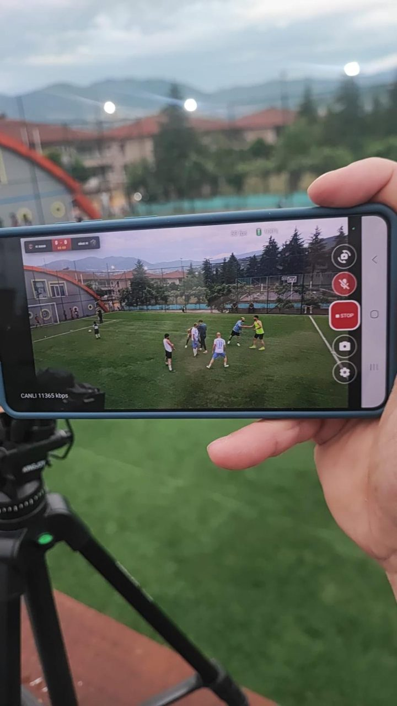

Baykul Broadcaster maçları gerçek zamanlı skor ve kadro grafikleriyle doğrudan YouTube Live'a yayınlar. Gol, kart ve oyuncu değişiklikleri yayın durmadan kamera ekranından girilir.

Özellikler
Tek kişi, tek telefonla hem maçı çekebilir hem de skoru tutabilir.
Gol, kart ya da oyuncu değişikliği Baykul Broadcaster'ın kamera ekranından veya Prolig'in operatör ekranından girilir.
YouTube Live'daki skor ve kadro grafikleri gerçek zamanlı güncellenir.
Prolig'deki puan tablosu, gol krallığı, raporlar ve sosyal medya görselleri kendiliğinden güncellenir.
Ligin kanalından
Kocaeli'de yerel bir lig, maçlarını Baykul Broadcaster ile yayınlıyor ve ligin YouTube kanalında paylaşıyor.
Saha kenarında
Bütün kurulum, tripod üzerindeki bir telefondan ibaret. Uygulama canlı görüntüyü skor grafiğiyle gösterir. Maç paneli de aynı ekrandadır.
Bu fotoğraf Kocaeli'de bir lig maçı sırasında çekildi.
Baykul Broadcaster kapalı beta aşamasında. Bir lig ya da turnuva düzenliyor ve denemek istiyorsanız bize yazın.
furkan@ofsenterprise.com